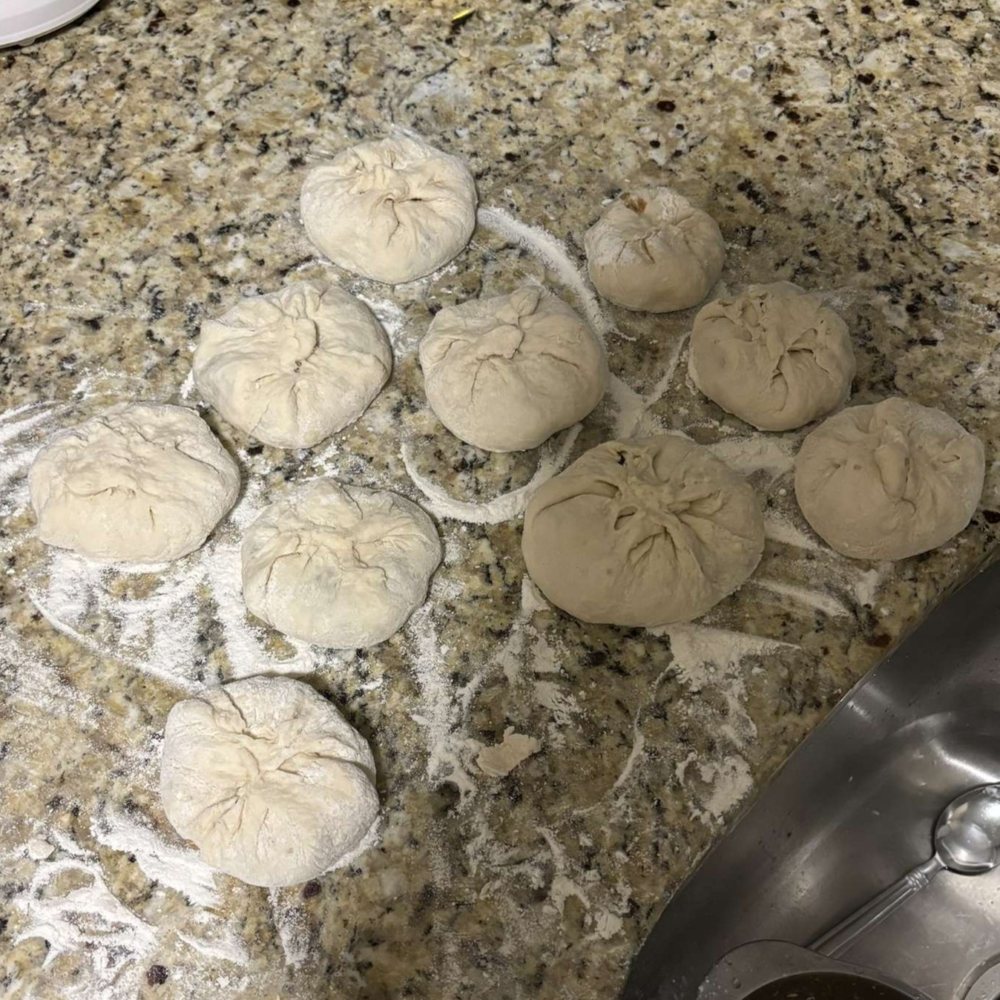

Home
About Me
Food
Suggestions
Foods I Have Prepared:
Arrange in Chronological Order
Arrange from A-Z
Butter Chicken
Brownie

Bao
Speculaas
Worstenbroodjes
Sugar Cookies
Chocolate Chip Cookies
Honey Ham Quesadilla
Lamb and Beef Gyro
Burrito
Italian Grilled Cheese
Garlic Tortellini